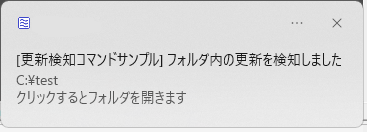
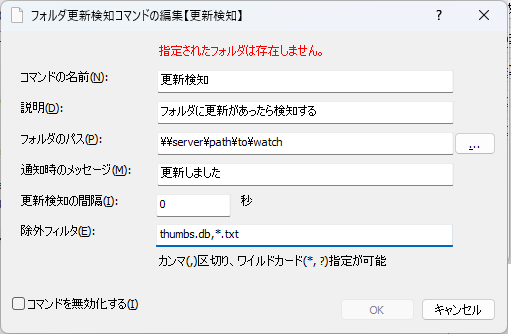

フォルダ更新検知コマンド
任意のフォルダを監視し、フォルダ内のファイルの変更を検知したときに通知してくれるコマンド。
ファイルサーバ上にあるフォルダに何らかの変更があったときに、それを知ることができる。
更新通知のイメージ

設定画面

コマンドの名前入力画面からコマンドを実行するためのキーワード
説明コメント表示欄に記載される文字列。
フォルダのパス更新を検知したいフォルダのパス
通知時のメッセージ更新検知通知に表示する文言を指定する
更新検知の間隔指定した秒数が経過するまで、更新を検知しても次の通知を行わない
共有フォルダ上のファイルを誰かが直接編集作業をしていることにより頻繁に通知が来るのを避けるための設定
除外フィルタ変更があっても無視したいファイル名を指定する
カンマ(,)区切りで複数指定することができる
ワイルドカード指定が可能(
*→0文字以上の任意の文字列、?→任意の1文字)例:
thumbs.db, *.txt→thumbs.dbとすべての.txtが変更されても通知しない
コマンドを無効化するチェックすると更新検知を行わない
機能を一時的に無効化したいがコマンドを残しておきたい、というときのための設定
動作の説明
アプリ起動中の状態しか見ない(前回実行時の状態を保持することはしていない)ため、アプリを終了している間のフォルダ更新を検知することはできない
監視対象パスがローカルパスかネットワークパスかで実装方法を分けている
ローカルパスの場合は
ReadDirectoryChangesWAPIを用いて対象フォルダの更新を検知するネットワークパスの場合は独自の処理で検知する
手元で試した感じ、
ReadDirectoryChangesWはネットワークパスの場合に安定して検知できなかっためツール作成者本人が想定する用途としてはファイルサーバ上の特定フォルダの更新検知であり、ネットワークパスで使えないと意味ないので・・
スタートメニューに登録してある場合は、トーストをクリックすると、監視対象フォルダを開くことができる
実行時の動作
押下キー |
動作 |
|---|---|
|
更新検知対象のパスを開く |